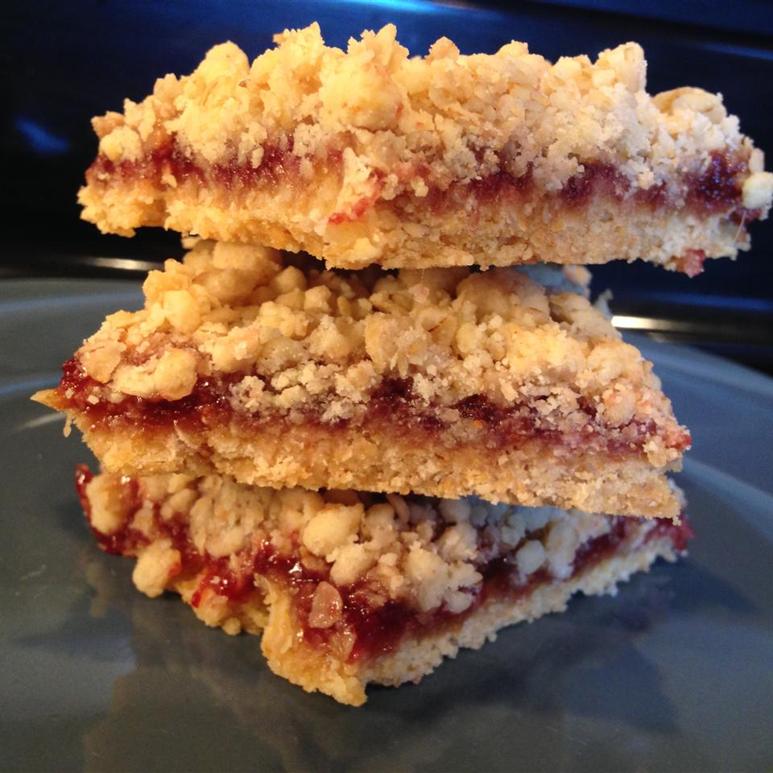

Raspberry Oatmeal Bars

Quick and easy squares for breakfast
Can be mix n matched with other fruit toppings
Ingredients
- 1 (18.25 ounce) package yellow cake mix
- 2½ cups quick cooking oats
- ¾ cup margarine, melted
- 1 cup raspberry jam
- 1 tablespoon water
Steps:
- Preheat the oven to 375 degrees F (190 degrees C).
Grease a 9x13 inch pan.
- In a large bowl, mix together oats, cake mix, and melted margarine so that it makes nice clumps and there is no dry mix left.
Press 1/2 of the oats mixture evenly into the bottom the prepared pan.
In a separate bowl, mix jam with water, and spread over the crust.
Sprinkle the remaining oat mixture evenly over the top.
- Bake in the preheated oven for 18 to 23 minutes, or until the top is lightly browned.
Cool before cutting into bars.